1. Convolution is an approach in which a convolution kernel slides over an image: at each position, the kernel is multiplied by the corresponding region of image pixels, and the resulting products are summed to obtain the corresponding output value.
By using convolution, we can blur the image, find boundaries and extract more features. For example, here are some outputs of convolution.
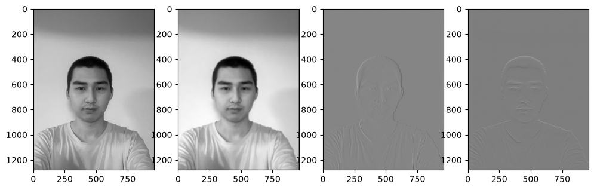
2. We can also compute and show the gradient magnitude image.
3. The results with just the difference operator were rather noisy, but we can use the Gaussian filter G. As shown below, there is less noise.
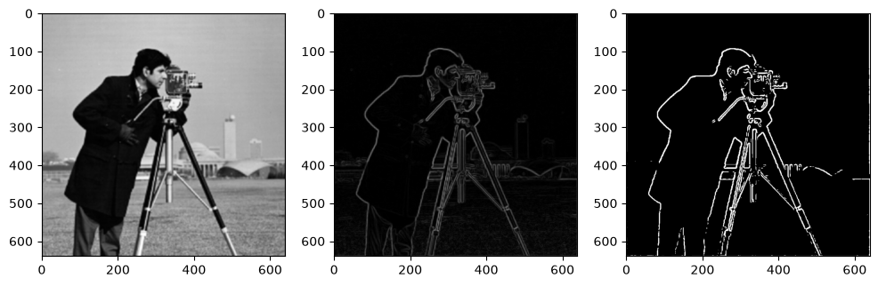
We can also do the same thing with a single convolution instead of two by creating a derivative of gaussian filters, the result is the same.
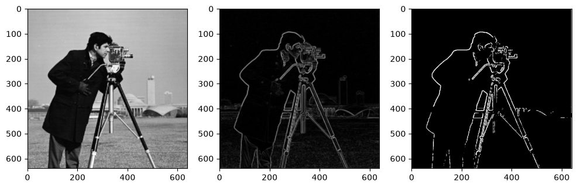
We can even visualize gradients with HSV color space.
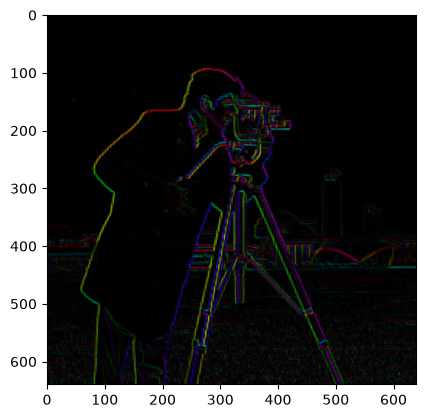
1. There are more things we can do with convolution. For example, we may use a Gaussian filter to retain only the low frequencies, then subtract the blurred version from the original image to get the high frequencies of the image.
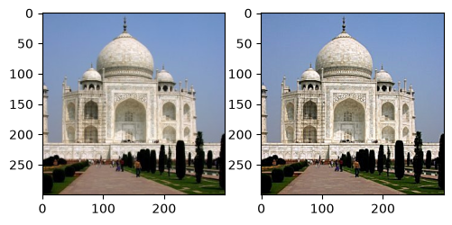
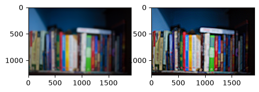
2. We may create hybrid images using the approach described in the SIGGRAPH 2006 paper by Oliva, Torralba, and Schyns, which is to combine high-frequency images and low-frequency images.
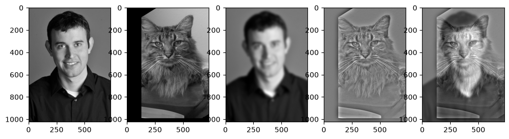
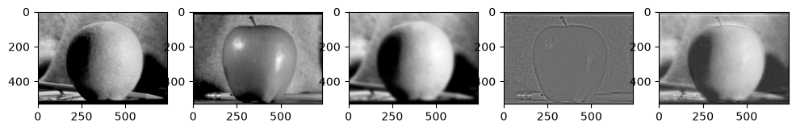
3. We will implement Gaussian and Laplacian stacks as mentioned in the 1983 paper by Burt and Adelson, which will be used later for blending images.
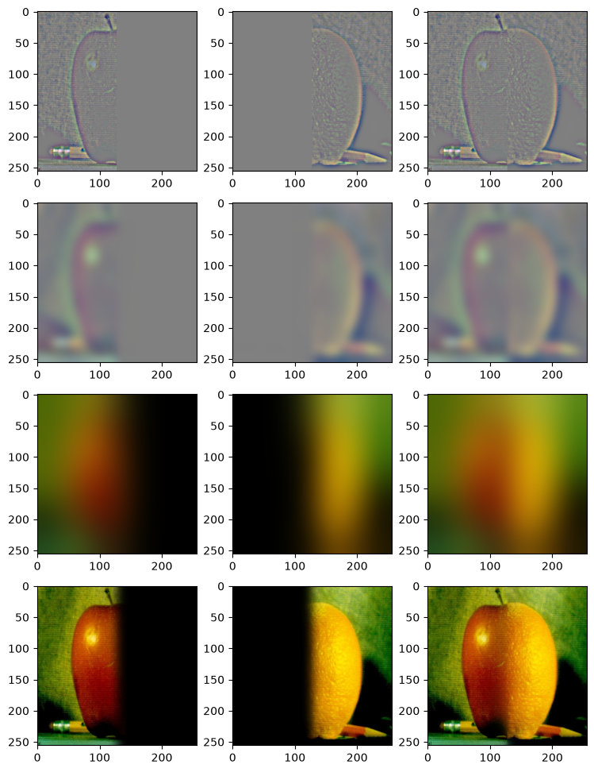
4. Now we can blend 2 images together with a vertical or horizontal seam. Here are 3 examples. The first and second images are the original images. The last image is the final result.
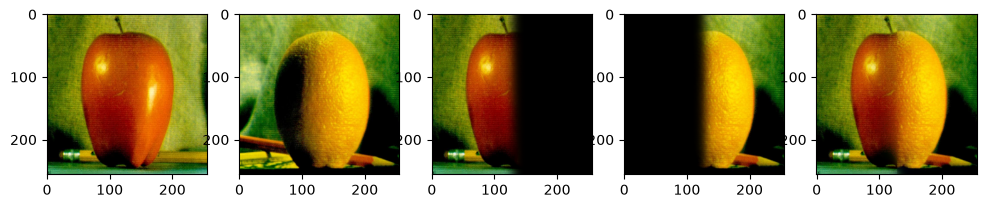
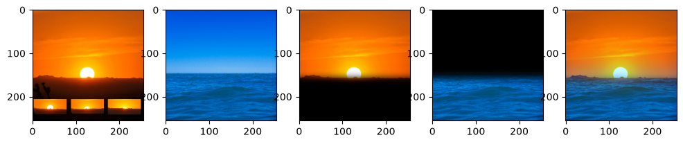
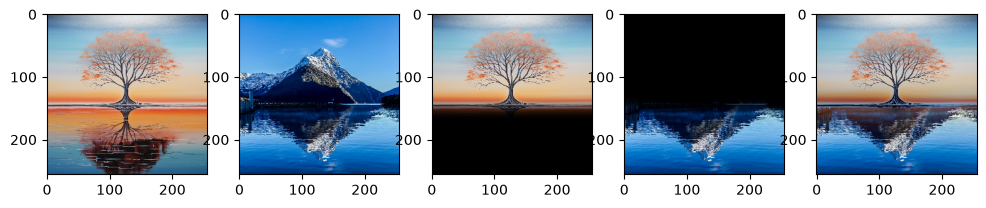